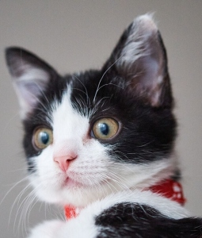
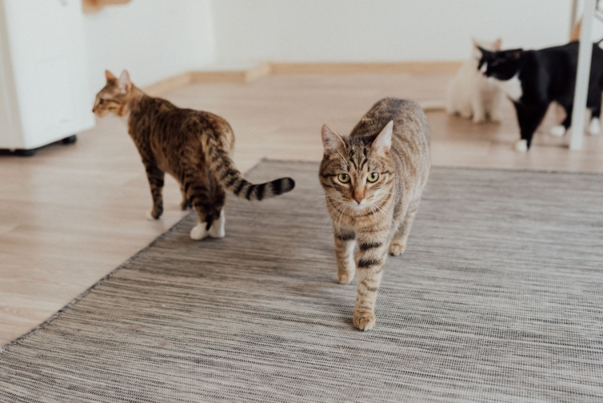
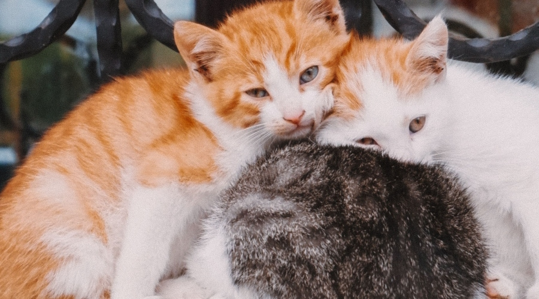
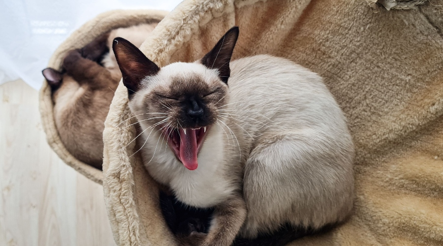
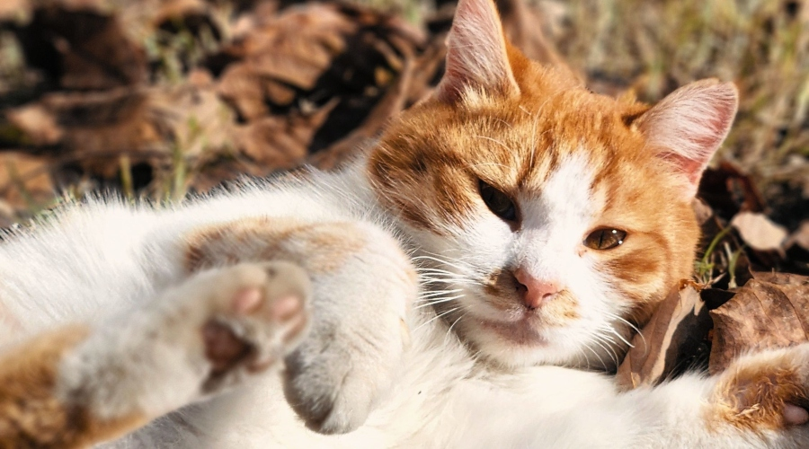

- Copy.jpg)
Cat Breeds
There are many cat breeds, each with unique looks and personalities. Siamese cats are vocal, Maine Coons are large and friendly, and Persians have long, fluffy coats. Every breed is special, but the Catbee is truly one of a kind. :)
There are many different breeds of cats, and each one has its own unique features. For example, Maine Coons are large and friendly, Siamese cats are talkative and social, and Persians have long, fluffy fur. No matter the breed, all cats are intelligent and make wonderful companions.
Cats have many special abilities that help them in everyday life. They can jump several times their own height, see well in low light, and use their whiskers to judge small spaces. Their sharp claws and quick reflexes also make them excellent climbers and hunters.
There are many cat breeds, each with unique looks and personalities. Siamese cats are vocal, Maine Coons are large and friendly, and Persians have long, fluffy coats. Every breed is special, but the Catbee is truly one of a kind. :)

Cats are known for their unique personalities and make wonderful pets. Some cats are playful and energetic, while others are calm and enjoy relaxing. They can form strong bonds with their owners and show affection in many different ways.
 - Copy.jpg)
Cats have amazing abilities that help them survive. They have sharp claws for climbing, powerful legs for jumping, and excellent night vision. Their whiskers also help them safely move through small spaces. Look here this one can climb a roof!



